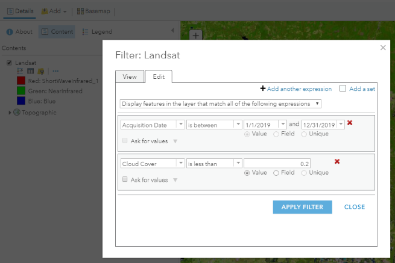
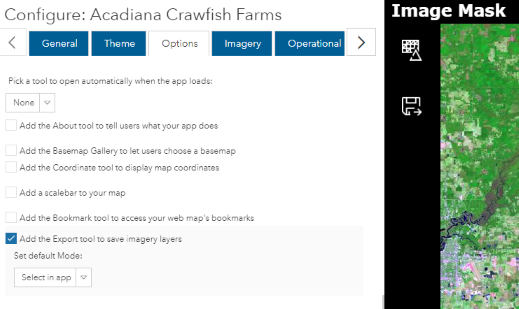
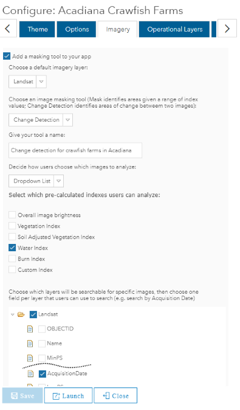
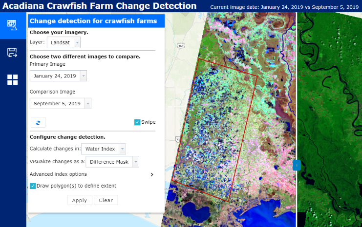
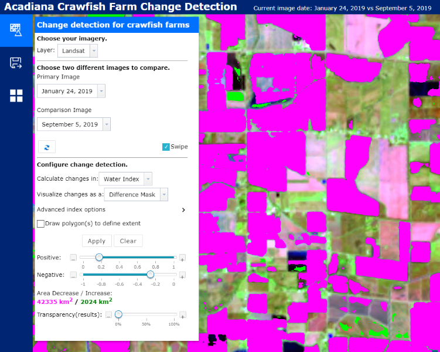

Assignment 8
Imagery in Web GIS
In this assignment we will use ArcGIS Online to view multispectral satellite imagery and create a web app that compares images from different dates to highlight landcover change.
Table of Contents
Finished Example
https://www.arcgis.com/apps/ImageMask/index.html?appid=8d0c061af0bb41209cd3fe7c1411e30e
Data
Images from the Landsat series of satellites are available in the ArcGIS Online Living Atlas as a web service. Landsat satellites have provided multispectral imagery of Earth’s surface for more than 40 years. See the Multispectral Landsat Item Details page for more information on the Landsat mission and the images it produces.
This example will zoom into the crawfish and rice fields of southern Louisiana to see changes in land use at different times of the year. You may use this example or instead choose a different area to detect changes in water or vegetation over time.
Steps
Part 1: Create a map with imagery
- In ArcGIS Online, go to the Map Viewer and click
New Map. - Click
Add>Add Layer from Weband paste the URL of the “Multispectral Landsat (Mature Support)” layer, named “MS” in the contents.
https://landsat2.arcgis.com/arcgis/rest/services/Landsat/MS/ImageServer - Click the
More Optionsicon (three blue dots) on the “MS” layer and clickDisable Time Animation. - Click
More Optionsagain and rename the image to “Landsat 8”. - Pan and zoom the map to your area of interest or the Acadiana region of Louisiana, centered roughly between Lake Charles and Lafayette. Zoom close enough to distinguish urban areas and agricultural fields (the map scale bar should be about 2 to 10 mi).
- Save the map, naming it “Image Comparison Acadiana” or something unique to your area.
Part 2: Adjust image color
The default view of the imagery is in false color, meaning you are not seeing the natural color. Greens look exaggerated because the color is being used to represent the infrared parts of the spectrum that Landsat captures, making the greens appear unnaturally bright. You can change the image display options to see the true color image.
- Click the
More Optionsicon and clickImage Display. - Under
Renderer, chooseNatural Color with DRA. ClickApply. - You can explore the different color combinations that highlight the ground cover in your image, and also try the
Stretch typeoptions to help with image brightness and contrast. To revert back to the default, chooseAgriculture with DRA. - After deciding on a color combination,
Saveyour map.
Part 3: Filter image dates and quality
- Click the
Filtericon on the Landsat layer and edit the existing filters orAdd another expressionto have the following conditions:Acquisition Date-is between-1/1/2019and12/31/2019Cloud Cover-is less than-0.2

- Click
APPLY FILTER. This will show images taken by the Landsat 8 satellite during 2019, if less than 20% of the image is covered by clouds. If the images disappear, try zooming in or out so the scale bar is 2 to 10 mi. It might take a few seconds for images to load. - Center and zoom on your area of interest, anywhere in the world, and
Saveyour map again.
Part 4: Create a web app
We will create an app that has a change detection tool. The tool will analyze our map’s imagery and classify the land cover—in our case, detect water. The geoprocessing takes place on ArcGIS Online servers, examining the pixel values for each band in the images to determine the unique “spectral signature” of water, which has very weak reflectance in the infrared.
- Click the
Sharebutton in the ArcGIS Online Map Viewer. - Check the box by
Everyone (public). - Click
Create a Web App. - Select the template category
Interpret Imageryand choose theImage Maskconfigurable app (see the app’s Item Details page). - Click
Create Web Appto confirm your selection. - Click
Doneto move on to configuring the app. - You can explore the tabs and try different settings.
- On the
Optionstab, for example, enable the export tool to allow users to save the result of their change detection analysis.
 - On the
Imagerytab, use the image below as a guide for an app that highlights changes in crawfish/rice fields in different seasons.

- On the
- Click
SaveandLaunchto view your app.
Part 5. Use your web app
- After launching your app, click the change detection tool.
- Select the layer and images to compare. See the settings below for detecting fields that were flooded in January but not in September, a common pattern for rice and crawfish farming. Note that I checked
Draw polygon(s) to define extentand drew a boundary to limit the analysis area.
 - Click
Applyto run the change detection. A new layer is created showing fields with significant changes in water coverage between winter and summer.

You can make the new mask layer transparent to see the images underneath, and play with the slider on the map to slide between the January and September images to visually evaluate the change detection results. Adjust the detection settings to get more accurate results that fit neatly within the boundaries of each rice/crawfish paddy.
Try it
- Configure your app’s
Themetab to not use default colors. - Launch your app and use the change detection tool. Take a screenshot of the result showing the pink/green mask layer.
- Fill in basic info on the app’s Item Details page.
a. ClickEdit Thumbnailand browse for the screenshot image you took.
b. Add a short description for theSummary.
c. SpecifyTerms of Use(“None”).
d. Add relevantTagsto describe the app with a word or short phrase.
e. Give credit where credit is due inCredits (Attribution), e.g., data providers USGS, NASA, Esri. - Add more details about the app for the
Descriptionon the Item Details page.
a. What layer(s) does it contain?
b. What bands are being displayed? Hint: theImage Displaysettings in the Map Viewer tell you this in the description of the Natural Color, Agriculture, and other display templates from Part 2.
c. What does the app allow users to do?
d. Give an example of what the result shows.
Checklist
- Map shows Landsat imagery.
- Map is viewable through a web app.
- App’s change detection tool works, can select two images and calculate changes in water or vegetation index.
- Customized app’s theme.
- Item Details page has change detection results screenshot as thumbnail.
- Item Details page has basic metadata.
- Item Details page has a detailed Description (“Try It”, Step 4).
- Link to your web app Item Details page works in incognito browser window.
Submit
- Only the URL to the Item Details page of your public web app. Example:
https://www.arcgis.com/home/item.html?id=ABC123orhttps://arcg.is/ABC123